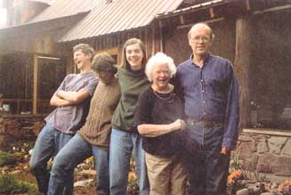

Rural Living: Working With The Land
John Stuart and Carol Mack have spent 25 years homesteading on 40 acres in the woods of northeast Washington. Here's what worked, what didn’t and why the family wouldn’t trade their rural living experiences for anything.
By John Stuart
August/September 2001
My wife Carol and I alighted on our homestead, a rocky bit of Northwestern forest, 25 years ago. We had a mix of experiences with botany, gardening and farm work, but this landscape was new to us. The land we chose reflected our mixed bag of assumptions, experience and naivete. We wanted to be where we could soak up the plant and animal life of the forest - call it the wild urge. But we also wanted to have a garden and fruit trees - call it the domestic urge. Our upland site, which is rolling and rocky, was well-chosen for its few good gardening spots, but it excluded other possibilities. Proximity to market and town were sacrificed for seclusion and wildness. Pasture and open space were sacrificed to forest living.
Small is Beautiful
One of the most important lessons we learned early on was that, with only 24 hours in a day, we needed to consider carefully where we wanted to concentrate our work. Because our whole reason for being here was to be out in the open air, we determined that we did not want to be a slave to our buildings. All buildings take constant maintenance. So building a small log house and then only putting up out-buildings that were absolutely necessary was a big Lesson No. 1.
Big Plans that Bore Little Fruit
Another lesson, learned the hard way, was about the mixture of attributes that contributes to soil fertility. We test planted three different sites the first summer to determine the best garden spot, and that experiment worked well. The site mat worked the best has supplied abundant food for our family for 25 years. Wanting to keep the fruit trees separate, however, we could only find one decent area that was excellent for its slight north slope. We knew this would delay flowering in the spring, a crucial helpful point in our area. But we were not able to pipe as much water as the trees needed and the soil was just too sandy and rocky for good nutrition and water-holding capacity.
After 20 years of minimal fruit crops, we swallowed hard, rolled up the wire fence and let the deer and bears re-inhabit that acre. We were not about to do without fruit trees, however. Our garden now includes about 20 trees, some rescued from the old site.
Microclimates: The Luck of the Draw, or Ridge?
In searching for land, have you ever heard a real estate agent mention microclimates? Not likely. We were mostly unaware of such a concept when we found our land, but we lucked out and are blessed with about as good a growing season as can be found in our area.
However, we have recorded as much as 25 degrees difference in the winter between our upland site and the closest creek bottom site two miles away. A neighbor in this low spot attempted a garden and found that it could freeze any month of the year.
This is where taking one's time with buying land pays off. Talking with neighbors and observing what is growing (or not growing) in people's gardens/yards would be smart advice before buying.
We Aren't the Only Ones Living Here
The best way to learn the ways of nature is to live in the middle of it. Our previous interest in natural studies blossomed once we were able to step directly into nature every morning, or hear it all night long. This awareness broadened our understanding of the forest, but it also opened our eyes and ears to the interchange, both good and bad, between that dividing line we refer to as the domestic and the wild.
One can come to think while gardening that all of nature's food addicts are hiding just out of eyesight, waiting for you to go to the house so they can gobble up your work of the last three months. But paying attention to the more subtle sounds and activities around the garden will show that some of those critters just happen to be on our side.
We all know about ladybugs, mantises and other such beneficial insects. They are slow and visible. Many more gardeners' friends live out there, some almost undetectable. Recently I found a saw-whet owl in the garden. A certain amount of pocket gopher and mole control is available free if you're in proximity to decent owl habitat. Most of the smaller owls and the larger barred owl prefer to nest in cavities in dead trees or live trees with heart rot. A couple other examples of hungry garden are partners song sparrows that annihilated the crop of beetles on our asparagus and sapsuckers that eat aphids on our fruit trees.
Use careful observation and field guides to understand the subtle interactions inside and outside the garden/orchard. State wildlife agencies and cooperative extension offices can be very helpful, as can neighbors who are doing similar horticultural activities.
Maintaining Community Connections
As energetic 20-somethings, we somewhat understood the importance of access to town. But as aging progressed and the bambinos appeared on the scene, distances were much more noticeable. We discovered "independence" is a relative term. Living in a city provides a kind of independence from expensive transport, a freedom to be close to friends, the list goes on. Life in the country comes with more personal space to run the chain saw at 5 a.m. and have some relative quiet at other times.
But humans are, by definition, social creatures who exist within the framework of the larger society. We all have to go to town, and transportation is expensive when living out in the boondocks. We rediscovered what my grandparents, who were farmers, knew long ago. Rural communities come to be only through social interaction. The country is not a place to run away from people but to find a differ ent way of building community. It is based on common land uses and common land problems and is an attempt to have our jobs and social lives in the same place. But the friends made and the human connections maintained are a big part of life, no matter what the location. All the material self-sufficiency in the world will never replace the laughter on the dance floor or the neighborhood kids' game of flashlight tag on a summer's evening.
Distances from a larger community also provided challenges, but some unexpected benefits in raising children. When the kids reached school age and were facing two to three hours a day on a school bus, we turned in desperation to homeschooling and launched a great adventure in learning together. Though this only lasted through sixth grade, that family-centered approach to learning carried on through their public schooling. Despite all the momentary frustrations of not being able to participate in each and every peer group activity, neither of our children would exchange their wild country childhood for anything else.
We have watched country neighbors come and go over the years, all moving closer to town to reduce time spent in automobiles. It seems that peace, quiet and a beautiful view are not enough to make up for the hardships of rural living for some. Those who have remained in the country generally have developed a deep working relationship with the land in some way, be it through gardening, livestock or forestry.
In our part of the world there is a plant, a white-flowered Ceanothus, that's designed by nature to be a pioneer on disturbed soil or after a forest fire. Its seeds can lie dormant in the soil for decades beneath 100-year-old forests, only to sprout when the forest burns and the seeds are drenched in sunshine once more. Similarly, the skills associated with sustainable rural living sometimes seem buried by popular culture, corporate farming and the commuting lifestyle. The hands-on approach to life is so visceral and pleasing however that it always survives in those of us who take the time and energy to seek out the traditions, information and companions who can help us see the light of day. Best of all, this garden of ideas can be planted on rural farmland, a suburban lot, or even in an urban apartment.
We welcome more reader reports for this new department.
|
 PHOTO: JOHN STUART John Stuart and his family outside their vertical log house. |
 PHOTO: JOHN STUART John Stuart, at work with a chainsaw. |
|